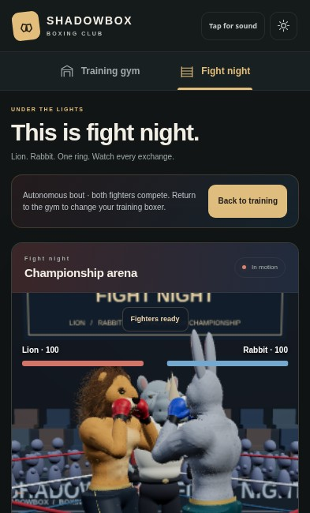
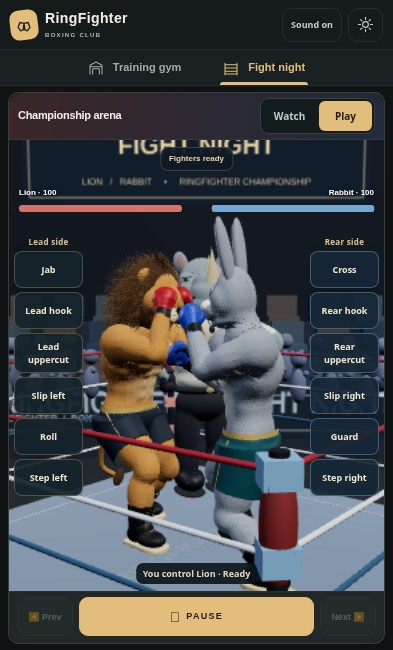
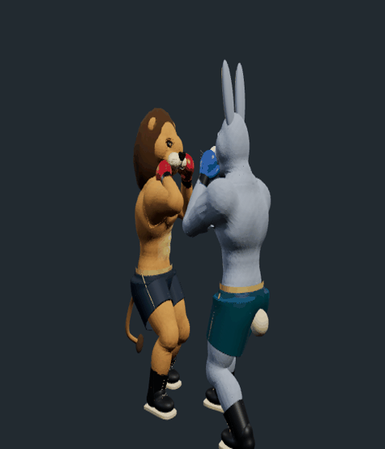
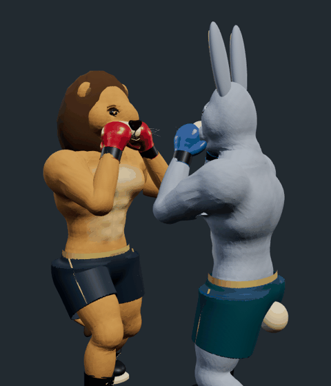
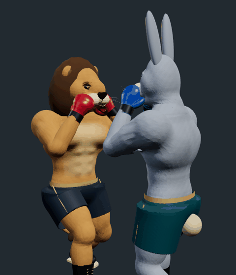
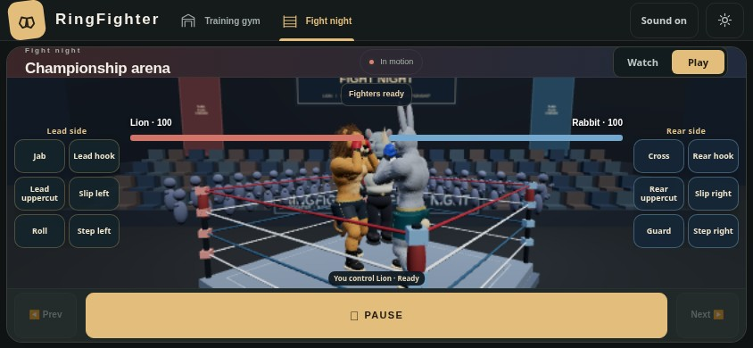

RingFighter — actual browser evidence
Baseline 7605fd4. Motion samples are 100 ms apart; coat/mane ribbons, scenery and shadows are hidden to inspect joints. These are actual WebGL app renders, not generated character images or a device-FPS benchmark. Source hashes and limits.
Phone viewport

R80: 948 px page in a 650 px viewport
R81: contained arena and twelve direct move buttonsRear hook / uppercut

Before R80RingFighter R81Cross / jab

Before R80RingFighter R81Hook / cross

Before R80RingFighter R81Landscape direct play
